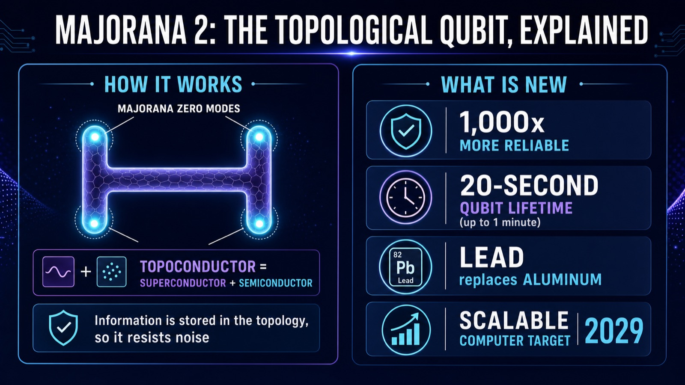

"That was actually a fairly large change, and it led to big, big improvements in device quality. We're 1,000 times better."
— Chetan Nayak, Microsoft Technical Fellow, on Majorana 2
Most qubits forget what they are doing in a few millionths of a second. Microsoft's Majorana 2 chip, unveiled on June 2, 2026, claims to keep a qubit stable for around 20 seconds, with some lasting a full minute, and a 1,000-fold improvement in reliability over the previous generation. If that holds up, it is a big deal for the hardest problem in quantum computing. By the end of this guide you will understand, in plain language, what a topological qubit is, how Majorana 2 protects quantum information, what actually changed from the first Majorana chip, and why some scientists are still waiting to be convinced. No physics degree required.

First, the Problem: Qubits Are Forgetful
A qubit (quantum bit) is the basic unit of a quantum computer. Unlike a normal bit, which is 0 or 1, a qubit can hold a delicate blend of both at once, which is what gives quantum machines their power. The catch is that this delicate state is easily destroyed by the slightest disturbance: heat, vibration, stray electromagnetic noise. When the state collapses, it is called decoherence, and it produces errors. In most of today's quantum systems, qubits survive only microseconds before decohering, so engineers spend enormous effort on error correction just to keep computations alive. Stability, not raw qubit count, is the real bottleneck. This is the problem Majorana 2 is designed to attack.
What Is a Topological Qubit?
Microsoft's bet is a different kind of qubit called a topological qubit. The idea: instead of storing information in one fragile particle, store it in the topology, the overall shape or pattern, of a material, spread across multiple points so no single local disturbance can erase it. Think of writing a secret not on one sheet of paper that can be torn, but as a pattern shared across several places at once, so damaging any one spot does not destroy the message.
Concretely, these qubits are built from a topoconductor, a material made by placing a semiconductor (such as indium arsenide) next to a superconductor. Under the right conditions, near absolute zero and tuned with magnetic fields, this combination enters a new state of matter called topological superconductivity. In that state, special entities called Majorana zero modes appear at the ends of a nanowire. (They are named after physicist Ettore Majorana and have the curious property of being their own antiparticle.) Microsoft arranges nanowires into an H shape, where the four Majorana zero modes together make a single qubit, and tiles many of these Hs across the chip. Because the quantum information is held collectively by those modes and shielded by an energy "gap", it is naturally more protected from the local noise that wrecks ordinary qubits.
Remember This
The whole point of a topological qubit is protection by design. Ordinary qubits fight noise with heavy error correction after the fact. Topological qubits aim to resist the noise in the first place, by storing information in a pattern spread across Majorana zero modes rather than in one vulnerable particle.
What's New in Majorana 2 (vs Majorana 1)
Majorana 1, announced in February 2025, was billed as the world's first quantum processor built on topological qubits. Majorana 2 is the follow-up, and the improvements are concentrated in stability:
- A new material. The superconductor was changed from aluminum to lead, the same metal used to shield against radiation in hospitals. Microsoft's Chetan Nayak called this "a fairly large change" that "led to big, big improvements in device quality."
- 1,000x more reliable. Microsoft reports a thousand-fold reliability gain over the prior generation.
- Seconds, not microseconds. A mean qubit lifetime around 20 seconds, with some up to a minute, where the earlier chip was reported in the single-digit seconds and most rival qubits last microseconds.
- A faster roadmap. Microsoft now says it expects a scalable quantum computer by 2029, roughly half its earlier timeline, with the architecture meant to scale toward a million qubits.
A Surprising Twist: AI Helped Build It
One of the most interesting details is how Majorana 2 was developed. Microsoft used its agentic AI platform, Microsoft Discovery, to accelerate the science: automating measurements (cutting cycle times by orders of magnitude), filtering fabrication data, detecting anomalies, and optimizing device parameters. Microsoft's Zulfi Alam described the goal as simulation-driven experimentation where, ideally, you "only have to experiment once." It is a concrete example of the shift we explored in our look at how autonomous AI agents are moving into real, high-stakes work: here, AI agents are helping design the very hardware of the next computing era.
Putting the Numbers in Perspective
Why get excited about 20 seconds? Because the jump from microseconds to seconds is roughly a millionfold in time. If a normal qubit is a soap bubble that pops almost instantly, a 20-second qubit is one that drifts across the room before bursting. That extra time means far fewer errors to correct, which is exactly the overhead that has made large quantum computers so hard to build. For scale, each Majorana 2 qubit is about one-hundredth of a millimeter, and operations run in about a microsecond, so the chip stays small and fast while the information lasts far longer.
Remember This
The headline is not "more qubits", it is "longer-lasting qubits". In quantum computing, a stable qubit is worth far more than a fragile one, because stability is what shrinks the crushing cost of error correction.
Common Misconceptions (Including a Big One)
A few things trip people up. First, this is not a finished, general-purpose quantum computer you can use today; it is a research chip demonstrating an approach. Second, "1,000x more reliable" and "20-second lifetime" are two different claims, one about error rates, one about how long the state survives, and should not be blurred together. Third, and most important: these are company-reported results that had not been peer reviewed at announcement, and some physicists remain skeptical. Majorana physics has a contested history, and earlier high-profile claims in the field faced scrutiny, so independent verification matters here more than usual. Healthy enthusiasm, paired with "let's see the replication", is the right posture.
Why It Matters Beyond the Lab
If topological qubits deliver on their promise, they could shorten the path to quantum computers that tackle problems classical machines cannot, in drug discovery, materials, cryptography, and optimization. That is the broader commercial stakes we mapped in our overview of where commercial quantum computing actually stands. It also sits alongside the wider race to build advanced computing hardware, from giant AI chip fabs to specialized accelerators. Quantum is the frontier where the physics is hardest and the payoff potentially largest.
What to Watch Next
Three things will tell you whether Majorana 2 is the breakthrough Microsoft hopes. Watch for independent, peer-reviewed confirmation of the stability claims. Watch whether the architecture really scales from a handful of qubits toward the thousands and then millions needed for useful computation. And watch the 2029 milestone: a credible, scalable machine on that timeline would reshape the industry. For now, the simplest accurate summary is this: Majorana 2 is a genuinely interesting bet on a fundamentally more stable kind of qubit, reported by Microsoft as a thousandfold leap, and awaiting the independent scrutiny that turns a bold claim into established science.